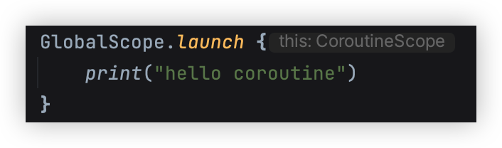
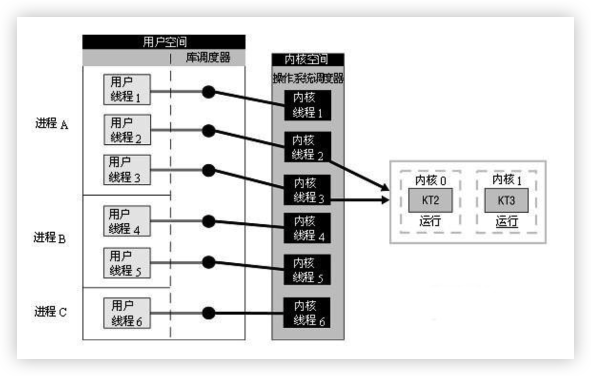
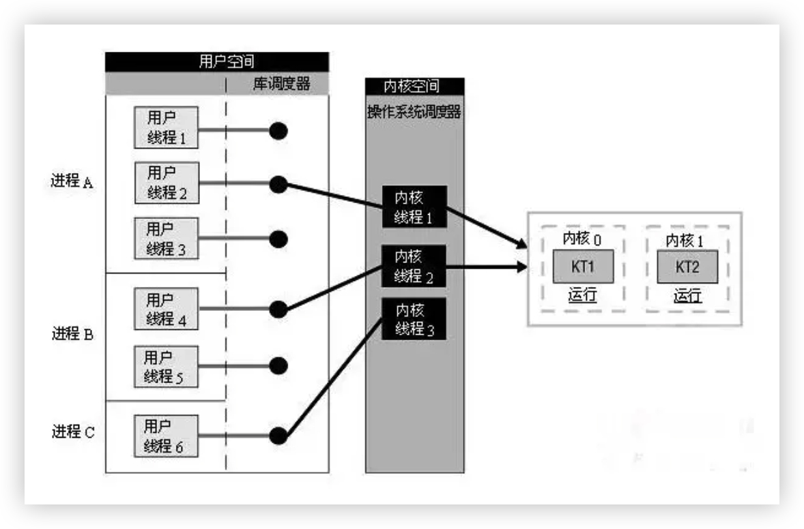
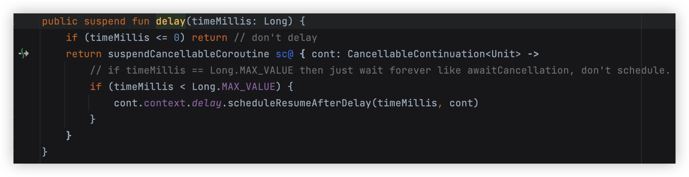
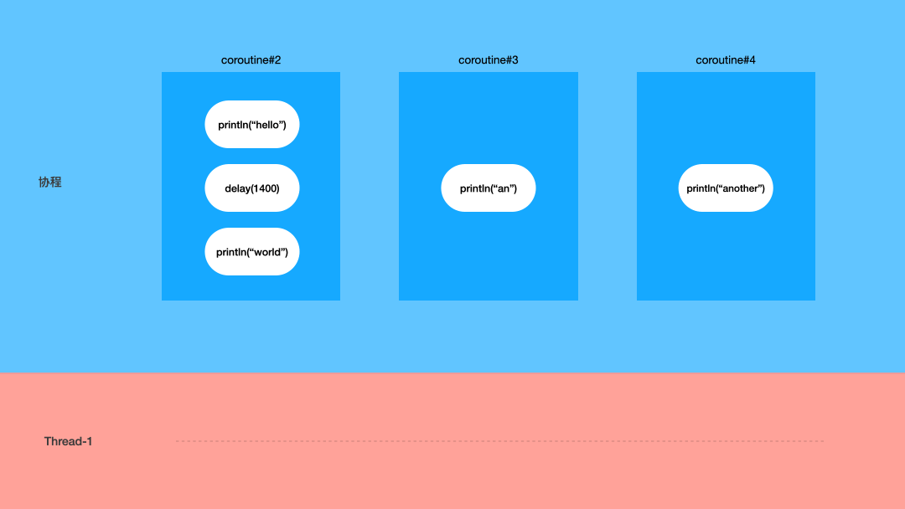
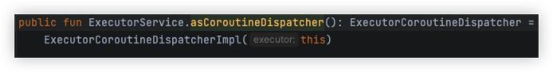

前言
A coroutine is an instance of suspendable computation.
It is conceptually similar to a thread, in the sense that it takes a block of code to run that works concurrently with the rest of the code.
However, a coroutine is not bound to any particular thread. It may suspend its execution in one thread and resume in another one.
以上这段话出自官网。介绍协程的基本概念和一些特性。
其中提到了可挂起，计算实例，线程相似性，代码块，并行，不绑定特定线程，在一个线程挂起在另一个线程恢复等关键字。
我们今天就围绕这些基本概念和关键字来探索一下协程的使用模型
请放心，本文没有晦涩难懂的源码解析，也没有深奥的概念，只有大量的类比帮你快速理解协程。
正文
简单示例
这大概是最简单的协程示例了。1
2
3GlobalScope.launch{
print("hello coroutine")
}
你可以将它加入到任意的 kotlin 代码中运行看看。
这段代码将 print 传递给了 Scope 的 launch 方法，标志着启动了一个协程来运行。那为什么使用协程要通过这样的调用方式呢？
要解答以上这个问题，就涉及到我们要讲的第一个概念 Scope
什么是 Scope？
Scope 是用来区分协程和非协程的作用域。
那为什么要加 Scope 呢？不加不行吗？就像我们平常写代码那样，就不需要加任何东西呀。
那是因为我们平常写的代码，都是跑在线程上的，不用加任何作用域限定，也会跑在一个特殊的线程（主线程）中。线程是操作系统层级的概念，任意的代码函数都会运行在线程上，所以我们可以不用加任何限定作用域。
而协程不行，协程是语言层级的概念，无法做到像线程那样成为所有函数的运行基础，所以我们需要在语言层面标识哪些是跑在协程的，哪些不是。
而 Scope 的作用就是用来标识和限定哪些代码跑在协程中。
协程框架提供了一些方式，可以快速的帮我们创建好 Scope，来包裹我们要跑在协程上的那些代码块。官方称之为 Scope Builder。
常用的 Scope Builder 有这些1
2
3
4runBlocking{}
GlobalScope{}
coroutineScope{}
withContext{}
如果你在代码遇到这些关键字，就可以知道这里有一个协程了。
注意，默认情况下，定义好一个 Scope 后，协程框架会启动协程来执行代码块，你可以通过参数控制这种默认行为。
另外，IDE 也会在有 Scope 的地方提示你：

图中的那个灰色的提示： this:CoroutineScope 标识了当前有个 Scope 存在。
上边我们也提到，协程并没有突破线程这一束缚，还是运行在线程上的，但同时协程却又被称为轻量级线程，这又是为什么呢？
我们先来看看操作系统是怎么定义和描述线程的。
内核线程 or 用户线程
操作系统为了系统安全，将程序运行的位置简单的分为了内核空间和用户空间，内核程序在内核空间中运行，用户程序在用户空间中运行，二者互不影响，通过系统调用来切换空间。
内核线程：指的是内核空间内的线程实体，是内核可以感知，操作系统调度的基本单位
用户线程：指的是用户空间内对应内核线程的实体，内核无法感知，用户程序可以通过这些实体来间接控制内核线程。
操作系统关于线程实现历史中，涌现了三种模型：
- 1:1（一个用户线程对应一个内核线程）
- M:1（多个用户线程对应一个内核线程）
- M:N（多个用户线程对应多个内核线程）


之所以出现这几种调度模型，是因为内核线程的使用是有一定成本的，每次切换线程都要切换线程上下文和保存寄存器状态，切换 CPU 上下文等。如果我们实现了在用户空间切换线程，可以省略和缩短 CPU 和内核空间切换上下文的开销。
既然有这种好处，为什么我们不使用这种模型呢？因为越是灵活的调度对应的是越复杂的实现。Linux 线程的实现模型已经踩过这个坑了，从最开始的 1:1 模型切换到 M:N 模型，最后又切换到 1:1 模型，就是因为实现太过复杂，导致效率反而下降。
有兴趣的可以参考这些文章：
https://www.linuxidc.com/Linux/2016-01/127559.htm
https://zh.wikipedia.org/wiki/Native_POSIX_Thread_Library
回过头来，协程其实和这种用户线程的实现理念是一样的。目的就是为了减少内核级上下文的切换导致的开销，提升效率。当然，协程还是跑在线程上的，完全不需要系统内核的参与调度，所以它比用户级线程还要更轻量一点，这也是它被称作轻量级线程的原因。
接下来我们就来看看协程是如何运行在线程上的。
协程运行在线程上
协程跑在线程上，我们可以类比为 Runnable 运行在线程上。
我们之前说过，协程类似于线程用户态模型， 代码块的调度都是发生在用户态的，是通过程序实现的。
在 Android 中有一个很著名的线程通信框架，也是通过程序实现代码块的调度的。
Handler
没错，就是我们耳熟能详的 Handler
Handler 内部实现了一个消息队列 MessageQueue，Handler 会不断的从这个 MessageQueue 中获取消息，然后在对应的线程上执行。
而协程执行的过程，其实和消息队列差不多。
比如以下的协程执行1
2
3GlobalScope.launch{
print("hello coroutine")
}
可以类比到 Handler 中1
2
3
4// 发送普通 Handler 消息
handler.post{
print("hello coroutine")
}
所以我们也可以将协程称之为一个任务调度框架。
但协程和 Handler 的不同点就在于协程底层并不是运行在某个线程上的，而是可能在多个线程上。
既然可能是多个线程，那么协程怎么知道我哪些代码要运行在 A 线程，哪些代码要运行在 B 线程呢？
换句话说，他是怎么调度的呢？什么时候会调度呢？
这就涉及到协程的另一个关键字 suspend
Suspend 做了什么？
我们将案例 2 扩展一下，思考这么一段代码1
2
3
4
5
6
7
8
9// 发送普通Handler 的延迟消息
handler.post{
print("hello coroutine")
}
handler.postDelayed(
{
print("hello world")
},300
)
然后我们看看协程的实现：1
2
3
4
5
6// 等价于协程
GlobalScope.launch{
print("hello coroutine")
delay(300)
print("hello world")
}
其中的 delay 是一个 suspend 函数。源码如下：

其中 suspend 是表示挂起的意思。那么这个挂起函数起到了什么作用呢？
我们知道，指定某个线程执行一段代码块，会有两个结果：
- 代码块中包含普通的代码，代码内容被全部执行完成，线程结束。
- 代码块中包含阻塞线程的代码，线程在这个阻塞点上挂起，直到线程被重新唤醒继续执行，线程结束。在线程阻塞期间，线程无法再执行其他代码。
而协程中并没有提供阻塞能力，取而代之的是挂起。挂起是指在某个线程上执行的协程被停止调度，协程框架转而去调度其他协程到这个线程上执行，这样就避免了线程的切换，从而提升当前线程的使用率。
那么，有 suspend 就一定会被挂起吗？
当然不是，带 suspend 关键字的函数被称为挂起函数。挂起函数仅仅标识当前函数内可能有挂起点，协程真正会挂起的位置被称为挂起点。
我们将协程可以执行的代码块分为两种：普通函数（普通代码块）和挂起函数（有挂起点的代码块）
普通函数：就是指一段串行的代码，如果开始执行，就一定会被在当前线程上顺序执行完毕。
挂起函数：包含了普通代码块和可能穿插的挂起点。普通代码块如上规则，而挂起点就是指以下关键字
1 | delay(time), await 等 |
遇到挂起点，协程就会在这个点上挂起，这时其他满足条件的协程就会被调度到这个协程底层的线程上继续执行。直到当前协程恢复的条件满足，才会被继续调度执行。
我们用一个实际的例子来看看，协程和线程中阻塞和挂起的区别
线程：1
2
3
4
5
6
7Thread{
println("${Date().time}: ${Thread.currentThread().name} hello")
Thread.sleep(1400)
println("${Date().time}: ${Thread.currentThread().name} world")
println("${Date().time}: ${Thread.currentThread().name} an ")
println("${Date().time}: ${Thread.currentThread().name} another")
}.start()
协程：
这段代码是启动了三个协程，并让他们都在同一个线程上调度
注意：这里将调度器指向了一个单线程池。
1 | val dispatcher = Executors.newSingleThreadExecutor().asCoroutineDispatcher() |
我们停下来先思考一下他们的输出分别是什么？
线程输出结果：
1 | 1690337539395: Thread-0 hello |
协程的输出结果：
VM options 设置-Dkotlinx.coroutines.debug=on 即可开启协程名称
1 | 1690337474719: pool-1-thread-1 @coroutine#2 hello |
从线程的输出结果中，我们可以看到，整个线程 Thread-0 被 Thread.sleep() 这行代码阻塞，无法继续往下执行，直到1.4s 后被唤醒了才继续往下执行
而协程就不一样了，2 号协程因为 delay 而挂起，但是并没有阻塞他所在的 Thread-1，协程框架会继续调度其他可执行的协程跑在 Thread-1 上，所以我们可以看到紧接着 3，4 号协程被调度执行。delay 1.4s 后，2 号协程被唤醒，继续往下执行。

有些人可能还会有一个疑问，挂起操作会导致协程先执行到后边的代码吗？
比如上边的代码中，协程 2 号挂起之后，“world”的输出会被调度到其他线程上，从而比 “an” 或者 ”another” 先输出吗？
答案是不会的。
同一个协程内会遵循 先行发生原则
学过线程（Thread）的肯定了解这个概念。其中有一条：
程序次序规则（Program Order Rule）：在一个线程内，按照控制流顺序，书写在前面的操作先行发生于书写在后面的操作。
简单来说就是单个线程内部代码是串行的，控制流前边的代码会先行发生于后边的代码。
而协程也有这样的规则，同一个协程内会遵循先行发生原则，即输出 world 之前，协程 2 号会被 delay 挂起暂停执行。
上边的例子我们解释了协程挂起这个特性究竟是怎么回事，下边我们再看看协程在面对多线程调度时的另一个特性。
我们将协程代码稍微修改一下，并且让他调度在多线程池上呢？代码执行结果会有什么不同吗？
1 | val dispatcher = Dispatchers.IO // 替换为多线程调度器 |
我们运行以上代码，输出 1：
1 | 1690338849816: DefaultDispatcher-worker-2 @coroutine#2 hello |
我们再运行一遍呢
输出 2：
1 | 1690338877016: DefaultDispatcher-worker-1 @coroutine#2 hello |
我们会发现字符串输出顺序一致，但是指向的线程却不一样了。
输出 1：2 号协程在 2 号线程上输出 hello 之后挂起，然后在 1 号线程恢复执行，输出 world
输出 2：2 号协程在 1 号线程上输出 hello 之后挂起，然后在 1 号线程恢复执行，输出 world
这说明：同一个协程并不一定总是会被调度在同一个线程上的。但它依然会保证协程内部的先行发生原则。
那么官网中提到的协程可能会在一个线程上挂起，在另一个线上上恢复的特性我们也就清楚了。
了解了挂起这个神奇的操作之后，我们再来拓展一下，看看挂起函数和普通函数的一些使用说明。
挂起函数不能被普通函数调用
挂起函数是指包含挂起点，拥有挂起能力的函数。但是挂起这个特性属于是 kt 新增的黑魔法，普通的函数无法正确被协程框架所识别和使用挂起能力。所以挂起函数不能被普通函数调用，不然遇到挂起点，就无能无力了。
所以挂起函数只能在协程作用域中使用，也就是我们上边提到的 Scope 中。在这个 Scope 中，可以识别和理解协程的挂起能力，挂起函数就可以按照我们预期的正常工作。
挂起函数只能被挂起函数调用
上边我们说过，挂起函数只能在协程作用域中使用，因为函数嵌套的特点，自然可以推导出挂起函数只能被挂起函数调用了。
我们如果误在普通函数中调用挂起函数的话，AndroidStudio 会贴心的提示我们以上内容。
挂起函数可以调用普通函数
这个也很好理解，因为我们上边说了，挂起函数其实是包含了普通代码块和一些穿插的挂起点。普通函数就是包裹普通代码块的函数，挂起函数自然是可以调用普通函数了。
挂起函数可以只包含普通代码，不包含挂起点
可以，但没必要，编辑器会提示我们 suspend 是多余的。
1 | suspend fun test(){ |
如上，编辑器会提示我们
总结一下，suspend（挂起） 是一个协程的机制，同时也是一个关键字。
作为机制来说，它指明的是和线程阻塞相区别的挂起能力。
作为关键字来说，它用来标识那些可以被挂起的函数，那些有挂起点的函数。换句话说，是标识那些只能在协程作用域内调用的函数。
这个 suspend 关键字以方便提示我们这些是协程的作用域，一方面也是告诉框架这些代码是要被运行在协程上的。这就是 suspend 的作用。
接下来我们看下协程另一个之前已经在示例代码中出现过的关键字 Dispatcher。
Dispatcher
Dispatcher 中文翻译过来就是调度器， 它是协程框架提供的让我们指定协程运行在哪个（或者哪些）线程上的指示类。
我们上边已经用到过两个调度器。其中 Dispatcher.IO 就是线程框架默认提供给我们的四个调度器之一。
协程框架总共提供了四个默认的调度器给我们使用：
Default：协程框架默认使用的调度器。如果调用协程时未指定任何调度器就会使用这个。内部使用一个公共共享的线程池，官方推荐我们可以用这个调度器来做一些耗费 CPU 的，计算密集的任务。
IO：从名称我们就能看出来，这是是用来处理 IO（例如文件 IO 和阻塞式 socketIO）的一个调度器。内部使用一个按需创建的线程池。
Main：主线程，在不同平台上都会指代主线程，用来操作一些 UI 相关的内容
UnConfined：这个调度器和上边的不太一样，它启动执行的线程和 suspend 回来之后的线程是不一样的。这个调度器会在当前的线程启动执行，直到遇到第一个挂起点。，然后这个挂起会在任意的不会特别指定的（UnConfined）线程上恢复。官方不推荐我们用在正常的场景中，除非你真的明白你需要这个特性。
除此之外呢，当然也可以自定义调度器，比如我们上边案例中使用到的单线程调度器，就是 Executor 转过来的。
你可以使用 ExecutorService 中的 asCoroutineDispathcer 这个拓展函数来将任意的 Executor 转义过来，非常方便

当然官方也非常贴心的提供了两个默认的从 Executor 转来的调度器，你可以通过 newSingleThreadContext 和 newFixedThreadPoolContext 这两个关键字来调用。
接下来，我们来看协程最后的一个关键特性，结构化协程
Structured Coroutine
协程内是可以启动无数个协程的，就像线程内可以启动无数个线程一样。不同点在与，线程内启动的线程和原有的线程并没有什么关联关系，他们是平级的。而协程多了一个结构化的概念（structured coroutine)，协程内启动的协程被称为子协程。
区分了父子关系后，可以有以下好处：
- 父协程会等所有的子协程结束才会结束。
- 父协程可以管理所有的子协程，可以启动和取消子协程
（这么看，更像一个任务调度器了）
结束语
探索完以上的内容，我们对协程的关键特性都已经有了一个初步的概念。我们发现，各种特性其实并不陌生，都和我们其他的概念有或多多少的关联，我们也会发现其实： 协程就是一个有语言关键字支持的运行在线程池上的任务调度框架。 这个调度框架可以让你更加便捷的进行多线程编程，避免进行复杂的线程切换和调度管理，从而专注于业务开发。仅此而已。
当然，如果你想要使用好协程，仅仅了解这些基础的概念还是不够的，我们还需要更多的练习，协程的使用才能游刃有余。